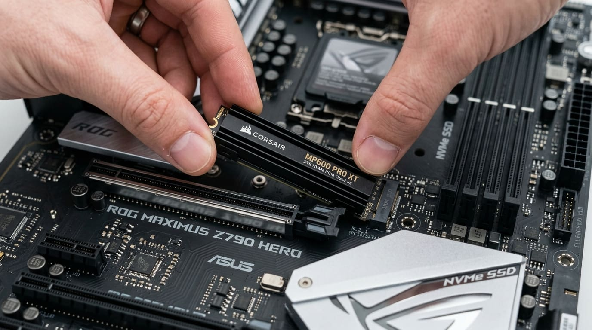

Mantenimiento de computadores y reparación de portátiles en Bogotá
Limpieza, cambio de pasta térmica, optimización y reparación de fallas. A domicilio en Bogotá, en laboratorio o por AnyDesk.

Técnico de computadores en Bogotá
Somos especialistas en mantenimiento de computadores en Bogotá y reparación de portátiles. Atendemos problemas térmicos, pantallas azules, fallas de tarjeta madre, cambio de pasta térmica de buena calidad y upgrades de SSD y memoria RAM para devolverle la velocidad a tu equipo.
Prestamos servicio de técnico de computadores a domicilio en Bogotá, con recepción en laboratorio, pruebas de estabilidad bajo estrés y garantía por escrito. Escríbenos tu barrio o localidad y te confirmamos la cobertura.
Qué hace Pedro con tu equipo
Cada servicio es una parada de esta línea. Escribe cuál necesitas, o describe el síntoma y Pedro te dice por dónde empezar.
Mantenimiento físico
Limpieza interna y pasta térmica nueva para que el equipo no se caliente ni se apague.
- Limpieza profunda del chasis y de la tarjeta con productos que no dañan los circuitos.
- Desarme de ventiladores y radiadores y lubricación de rodamientos.
- Pasta térmica de calidad, de marcas como Arctic, Noctua o Thermal Grizzly, según el equipo.
- Conviene repetirlo cada 6 a 8 meses.
Mantenimiento lógico y sistema operativo
Para equipos que se volvieron lentos sin que se haya dañado nada físico.
- Arranque más rápido: se quitan programas que se abren solos y no hacen falta.
- Eliminación de virus y malware que consumen recursos en segundo plano.
- Reparación del sistema: archivos dañados, actualizaciones y revisión del disco.
Diagnóstico y reparación
Cuando el equipo no enciende, se reinicia o muestra pantalla azul.
- Pantallas azules: se identifica el error exacto antes de cambiar nada.
- Reinicios y cuelgues: revisión de la alimentación y de las fases de la tarjeta madre.
- Cambio de componentes dañados: condensadores, chipsets y piezas en corto.
Repotenciación
Se revisa qué frena tu equipo y se cambia solo lo que hace falta, con piezas compatibles.
- SSD NVMe o SATA: arranque y carga más rápidos, clonando tu sistema para que no tengas que reinstalar.
- Memoria RAM DDR4 o DDR5: ampliación verificada con MemTest86.
- Refrigeración líquida o por aire: para que el procesador no baje su velocidad por temperatura.
- Fuentes de poder modulares: para alimentar tarjetas gráficas de gama alta.
Pruebas antes de entregar
Un equipo repotenciado se somete a pruebas de estrés con programas como Cinebench, AIDA64 y FurMark, y recibes un informe técnico de lo que se hizo.
Otras líneas
PC a la medida y GPU
Computadores armados según lo que haces y tu presupuesto, y asesoría para elegir tu tarjeta gráfica.
Ver la líneaImpresoras y soporte remoto
Impresoras de tinta continua y láser, y ayuda inmediata por AnyDesk sin que tengas que moverte.
Ver la líneaSoftware y periféricos
Formateo, virus, licencias originales de Windows y Office, y teclados, ratones y monitores.
Ver la líneaCuéntale a Pedro qué le pasa a tu equipo
Cuéntale qué le pasa a tu equipo. Diagnóstico honesto y presupuesto claro, sin compromiso.